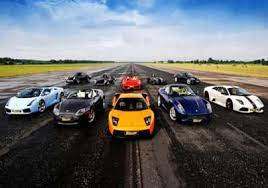
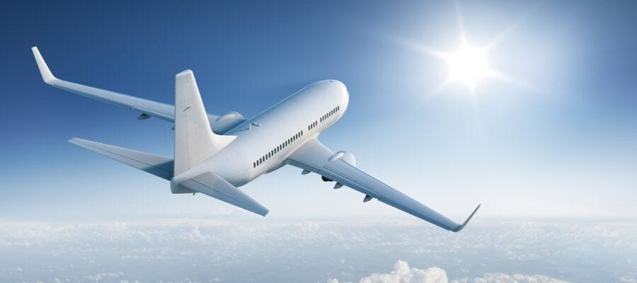

bicycle have two-wheeled steerable machine that is pedaled by the rider's feet. On a standard bicycle the wheels are mounted in-line in a metal frame, with the front wheel held in a rotatable fork. The rider sits on a saddle and steers by leaning and turning handlebars that are attached to the fork.
A car is a means of transport used for traveling from one place to another. This is a four-wheeler used by individuals or family members. We all use cars in our daily lives to go from one place to another for work. A car is a beautiful vehicle that has comfortable seats, AC, and windows.
An airplane (American English) or aeroplane (Commonwealth English), informally plane, is a fixed-wing aircraft that is propelled forward by thrust from a jet engine, propeller, or rocket engine. Airplanes come in a variety of sizes, shapes, and wing configurations. The broad spectrum of uses for airplanes includes recreation, transportation of goods and people, military, and research. Worldwide, commercial aviation transports more than four billion passengers annually on airliners[1] and transports more than 200 billion tonne-kilometers[2] of cargo annually, which is less than 1% of the world's cargo movement.[3] Most airplanes are flown by a pilot on board the aircraft, but some are designed to be remotely or computer-controlled such as drones.
The Kawasaki Ninja H2r is the fastest racing motorcycle of the Kawasaki heavy industries. It has the first supercharger that compresses the air intake in order to boost the engine performance. Moreover, it has carbon fiber rings that provide an efficient riding experience and stability.
BMWIt originated in 1916 as Bayerische Flugzeug-Werke, a builder of aircraft engines, but assumed the name Bayerische Motoren Werke in July 1917 and began producing motorcycles in the 1920s. BMW entered the automobile business in 1928. The company's R32 motorcycle set a world speed record that was not broken until 1937.
AirplaneAirplanes are one of the many amazing inventions. Prior with airplanes, travelers will just rely on horses, ships, buggies, and trains that will took days, weeks, and also months of traveling for the commuters before they can finally arrive at their place of destinations, wherein the longest nonstop flights are a little more than 18 hours. The record has been by the Singaporian Airlines for the flight that travelled 9,534 miles to the Newark, New Jersey is coming from Singapore. Are you still willing to spend another 18 hrs. and 30 mins. sitting on the plane? Actually, many would not want it. About 25% of the Americans had flown anxiety, whereas there are 6.5% of the populations of the world who are suffering from fear of flying or aviophobia.